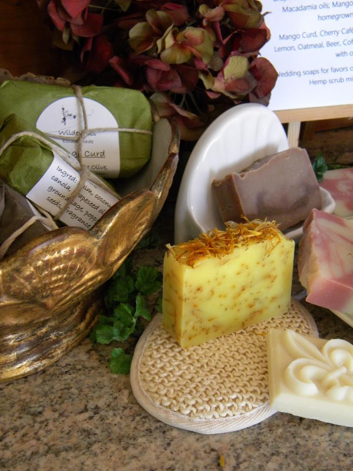

Sounds self-serving, but perhaps you’d like to know just who is on the other side of this web page.
I’m Barbara, a gal who likes to reinvent herself once in a while. After over 30 years in the food business, making food, serving food, buying food, feeding the masses, I was longing for a career change. My crystal ball wasn’t very clear that day, as I jumped into high tech in Silicon Valley. I stretched, learned, and grappled my way through this very foreign land of wireless, ERP, VOIP, SAP, and dozens more acronyms. Just as the peak hit and the mountain started to crumble... layoff time. Let myself lie low for a couple of years and again am now reinventing myself as a soap maker.
Why soap? It fulfills my creative drives, while I garden with my veggies, do some landscaping, accomplish some stitchery. It’s a consumable product, always in demand. It’s healthier for our skin, as more and more chemicals are invented and utilized in store bought body products. I enjoy creating new scenes and designs, using colors and textures and shapes. Cleansing is necessary, but it doesn’t need to be tough on our body. Nice aromas, silky soaps and moisturized skin is what I’m after — for me and for you.
So take a look at the selections and if you have any questions, don’t hesitate to contact me. Thanks!